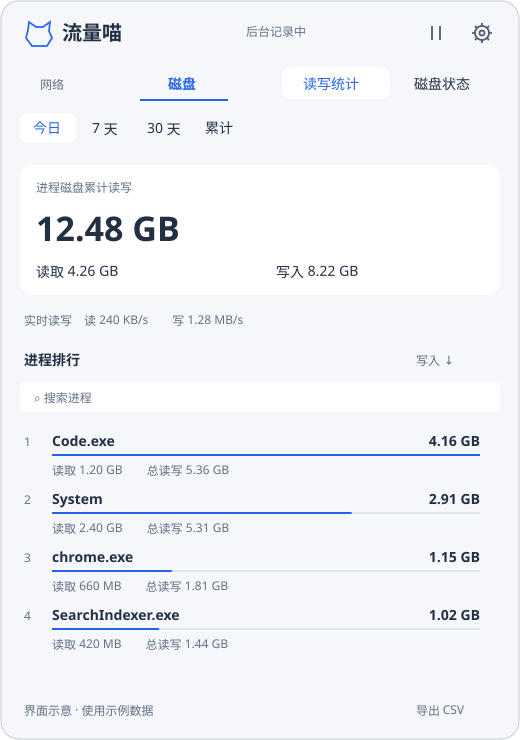

流量花在哪？
按进程查看下载和上传。应用与代理分开展示，真实 Wi-Fi 名称可筛选，网卡总量独立保留。
原生 Windows 工具 · v0.2.2
点开托盘，从总量看到进程。
界面退出后，后台继续记。
Windows 10 22H2 / Windows 11 · x64 · 免费开源

从总量到来源
按进程查看下载和上传。应用与代理分开展示，真实 Wi-Fi 名称可筛选，网卡总量独立保留。
磁盘支持今日、7 天、30 天与累计。按写入、读取或总量排序，也能搜索和导出 CSV。
查看可读取的 NVMe 温度、主机读写和耐久度已用。缺失指标显示“未提供”，不补成 0。
装好，待在托盘
运行安装器并允许管理员授权。
之后正常打开面板，日常使用无需提权。
设置中可以控制开机自启动、Wi-Fi 识别和更新检查。自启同时控制托盘与后台采集，关闭后本次记录继续。右键“完全退出”会保存并停止采集，再次打开恢复服务。升级保留历史，卸载也默认保留历史。
下载安装器 ↓当前仍为早期版本，暂未进行商业证书代码签名。
只记录采集服务运行期间观察到的数据。应用与代理不能相加；网络当前包含互联网与局域网。磁盘统计使用物理 I/O 事件，缓存和系统延迟写入会影响进程归属，不等于 SSD 闪存实际写入。
耐久度已用不是剩余寿命预测，可读取的指标取决于硬件与驱动。数据仅保存在本机，无需账号；仅更新检查和下载安装包会访问 GitHub。